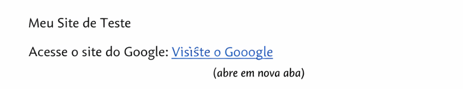
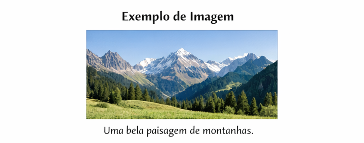
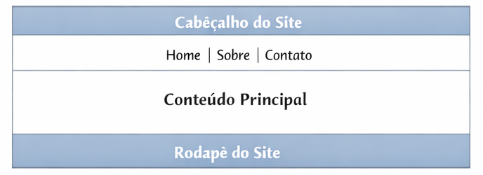
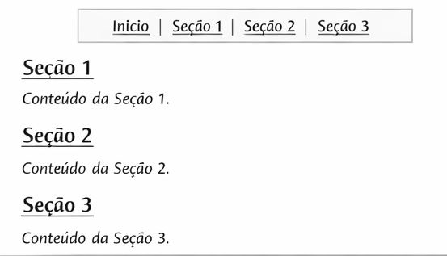

Exercícios de HTML - Links, Imagens e Estruturação
Exercício 1 - Link para Site Externo
Crie uma página contendo um título e um parágrafo com um link que leve para o site do Google. O link deve abrir em uma nova aba.
Resultado Esperado:

Exercício 2 - Inserindo uma Imagem
Crie uma página com um título e insira uma imagem utilizando a tag img. Adicione também o atributo alt descrevendo a imagem.
Resultado Esperado:

Exercício 3 - Imagem com Link
Crie uma página com uma imagem clicável. Ao clicar na imagem, o usuário deve ser direcionado para o site do YouTube.
Resultado Esperado:
Exercício 4 - Estruturação de Página
Crie uma página utilizando as tags semânticas: header, nav, main e footer. Dentro do nav, adicione três links fictícios.
Resultado Esperado:

Exercício 5 - Página com Links Internos
Crie uma página com um menu no topo contendo links que levam para diferentes seções da mesma página.
Resultado Esperado:
